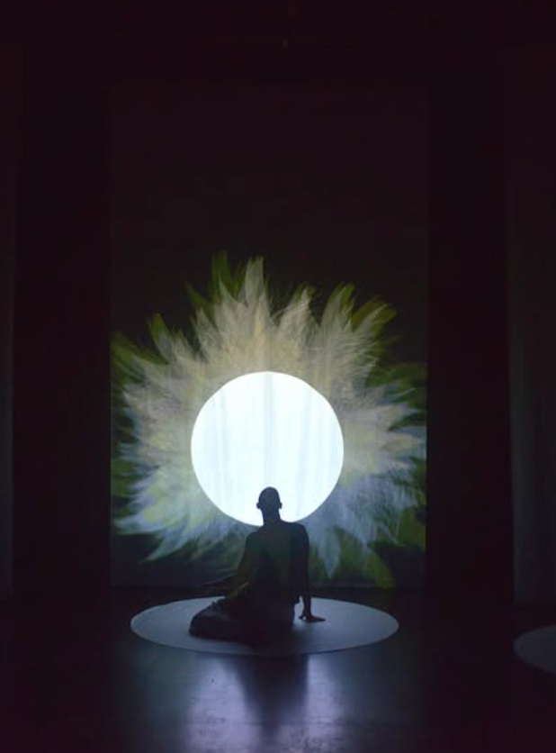
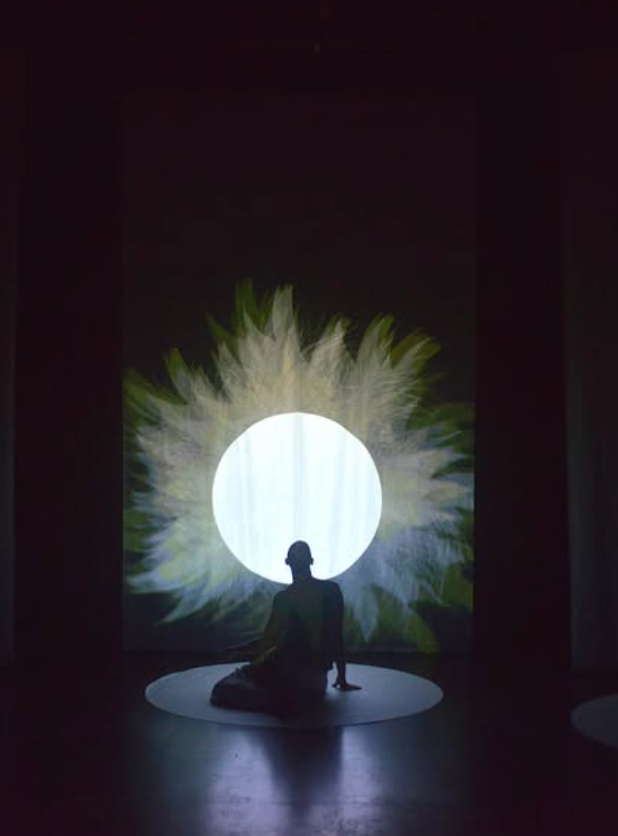
 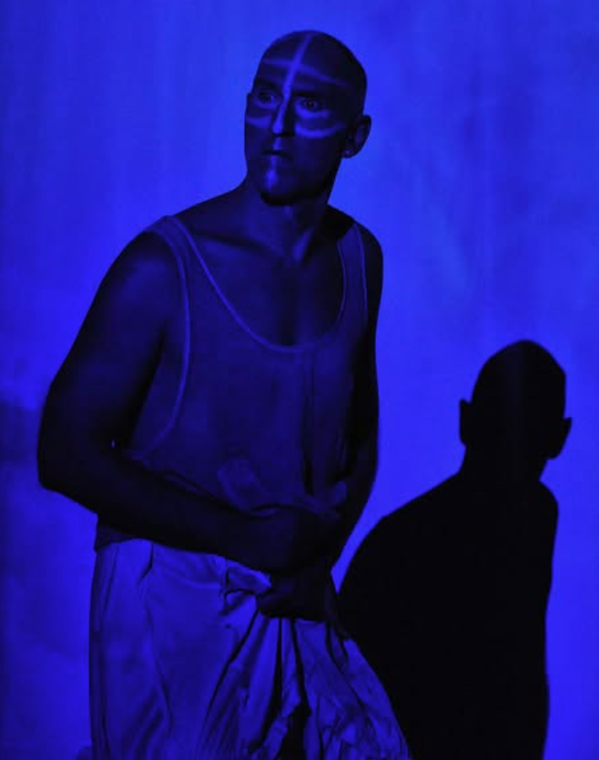
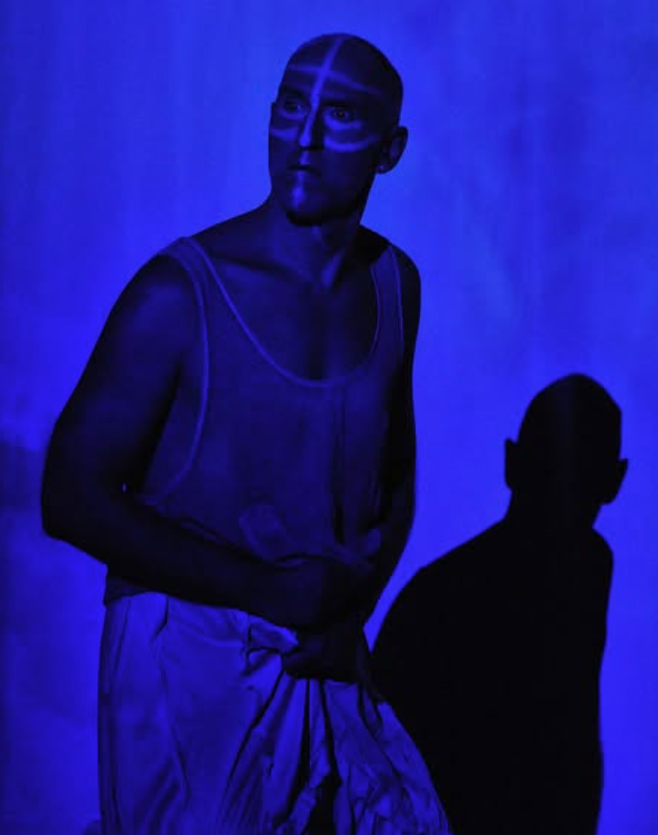

 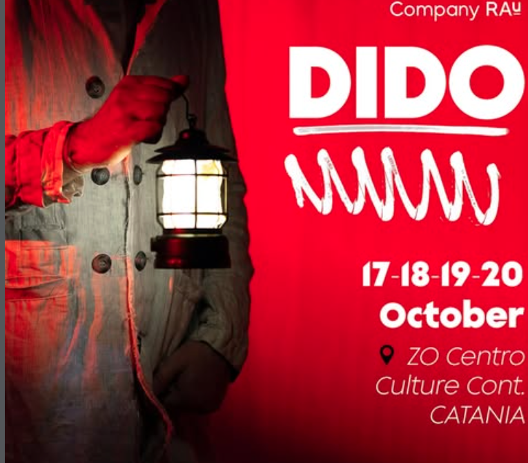
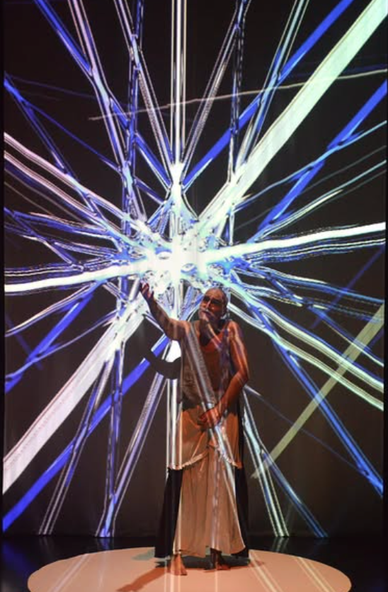
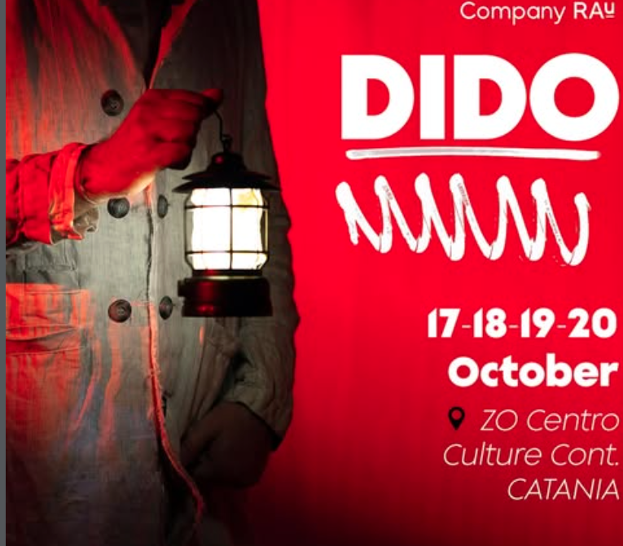
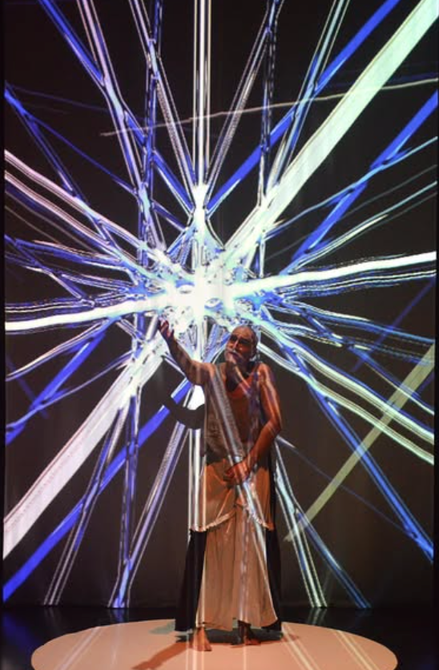
Dido (2021) is a 50-minute multimedia monodrama written by Korhan Başaran, composed for high-order ambisonic spatial audio and immersive performance environment. Commissioned by 212 Festival (Istanbul).
The score employs high-order ambisonics to construct a three-dimensional sonic field. The music is integrated with video mapping and programmable lighting to form a unified dramaturgical structure. Dido explores spatialized sound, immersive listening environments, and the relationship between voice, memory, and political resonance.
The production has been presented at the Istanbul International Theatre Festival and has toured internationally in England, Italy, Austria, Greece, Bulgaria, Romania, as well as multiple venues across Turkey.
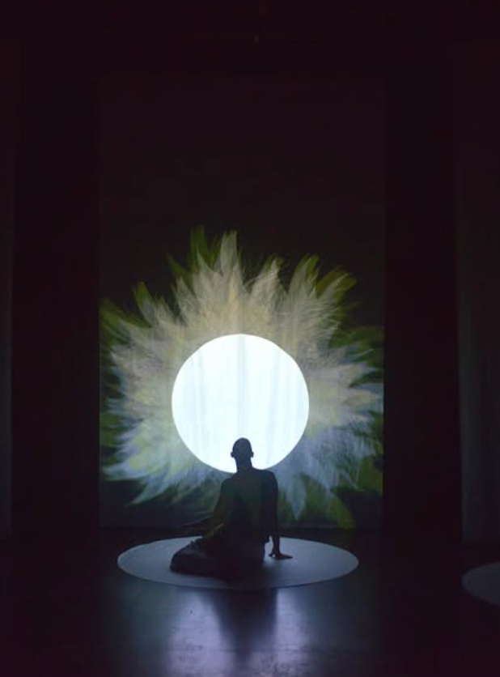
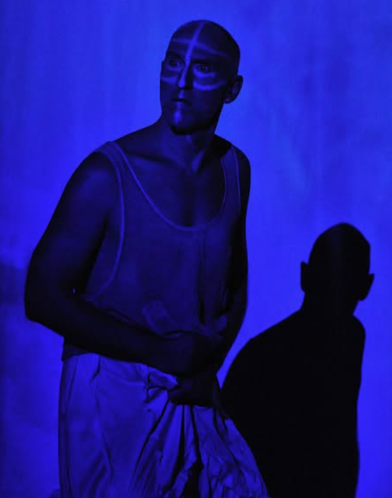
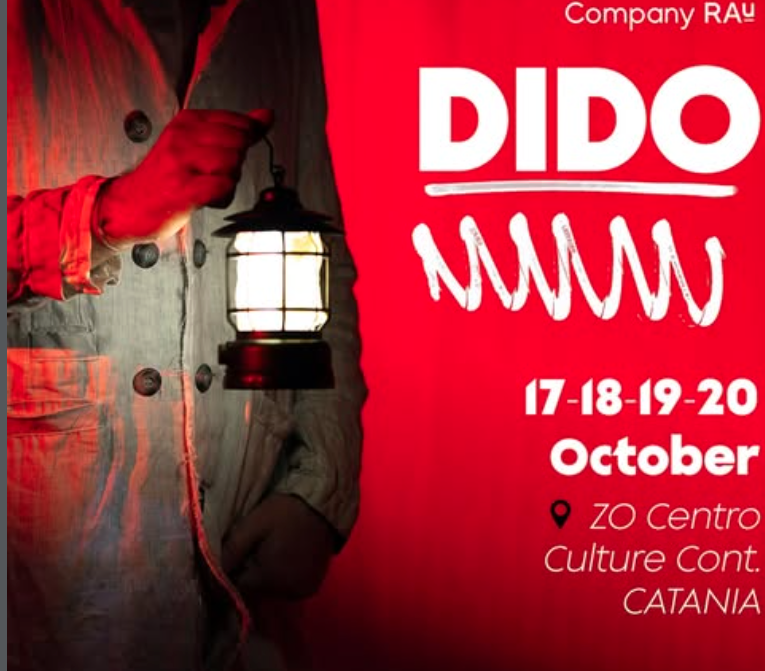
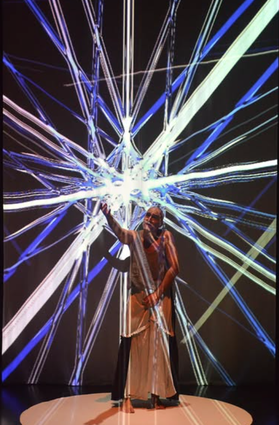
Fringe Review — Brighton Fringe (2024)
Broadway Baby — Brighton Fringe (2024)